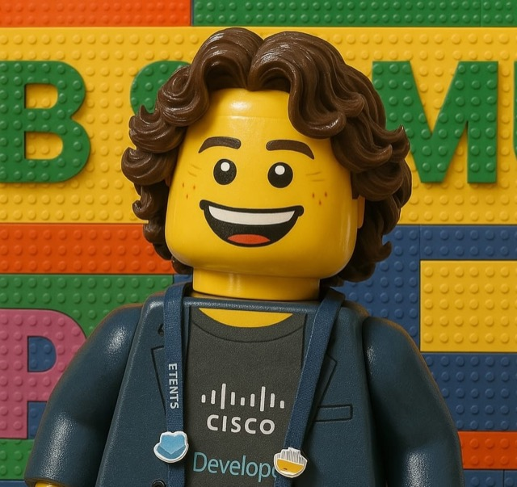

Democratising AI Platform Engineering with Open Source
Own It, Run It, Trust It
AI Leaders in Tech Night · Lisbon

Meet Alfonso “Poncho” Sandoval.
Developer Advocate and open-source maintainer at Cisco Systems, based in Lisbon, Portugal.
Today he shows how to own it, run it and trust it.
GitHub ponchotitlanLinkedIn asandovalros
I want agents to be part of my Monday
Not a moonshot. Someone to triage the ticket, check the logs, draft the reply and find the runbook, while your team gets on with the real work.
Everyday means every team, every day. That is where it gets hard.
Count the moving parts
A working list, not exhaustive.
What is AI platform engineering?
The infrastructure behind running agents and their tools safely: authenticated, authorized and traceable.
- Without it, every team solves access, tools, knowledge and approvals on its own.
- With it, those decisions are made once, in the open, and every agent inherits them.
You would never bring in a new engineer like this
- ×Production access on day one
- ×No guidance
- ×No manager
- ×No audit trail
So why would we put agents to work that way?
The onboarding checklist for an agent
- 1Who can use it?An access matrix
- 2What can it touch?A short tool list
- 3What does it know?Knowledge bases
- 4Who approved it?Human in the middle
- 5What happened?A trace
Three options
Build it yourself
You get total control.
You carry every part, and its upkeep.
Buy a proprietary platform
You get a fast start.
You carry answers you cannot inspect.
Adopt open source
You get a running start, and source code you can inspect and adapt.
You carry running it, and fixing it when it breaks.
You don’t have to reinvent the 16 parts
Prompt it yourself
Generate all 16 parts, one by one. Then own every one of them: the bugs, the upgrades and the security review.
Adopt open source
They already exist, and the five questions are already answered. You get source code you can inspect, tinker with and adapt, plus a community that fixes it.
Why open-source AI platforming, for a leader
The platform that runs your agents and their tools is the one you need to trust the most.
No lock-in
Your agents, skills and knowledge bases stay yours if a vendor changes terms or pricing.
Trust you can audit
Inspect how the platform handles access, approvals and traces for every agent, instead of taking it on faith.
You can tinker with it
Adapt the platform to your specific needs: your tools, your workflows, your rules. No waiting for a vendor roadmap.
What is yours?
Of those 16 parts, which do you build, which do you buy, and which are you hoping somebody else handled?
Whatever you choose, you still owe the five questions an answer.
An open-source alternative worth considering
Meet CAIPE, pronounced “cape”. Just as a cape empowers a superhero, it empowers teams with agentic AI automation.
One answer, not the answer.
Build, govern, and operate secure AI agents and workflows for teams.
Dynamic agents connected to first-party and external MCP servers.
Hybrid RAG and optional Graph RAG across web, AWS, Kubernetes, Jira, GitHub, Slack and more.
Cross-session fact extraction and per-user context.
OIDC SSO, Okta RBAC and policy-based tool restrictions.
Helm or Docker Compose, with Langfuse tracing.
Ordered agent steps with run history and artifacts.
Governed agents with set models, tools, knowledge and guardrails.
Plug in external MCP servers and custom agents.
Claude, OpenAI, Gemini or any compatible endpoint. Swap without rewiring.
Web UI, Chat CLI, Slack and Webex.
The scenario: LedgerLite
What happens next
- 1IndiraPayment fails, she reports it
- 2
 Jira ticketCreated in the shared project
Jira ticketCreated in the shared project - 3BeatrizRuns the Incident Copilot
- 4AgentsCluster Agent and Knowledge Agent investigate
- 5DiagnosisPosted on the ticket
- 6BeatrizApproves or rejects
What is in the picture
The agents do not change, only the front door: Slack reaches the same agents, teams and approvals as the web UI.
Who sees what
| Support (João) | On-call (Beatriz) | Owner (Miguel) | |
|---|---|---|---|
| Support Agent | ✓ | ✕ | ✓ |
| Incident Copilot | ✕ | ✓ | ✓ |
| Cluster Agent | ✕ | ✓ | ✓ |
| Knowledge Agent | ✕ | ✓ | ✓ |
| Product docs | ✓ | ✓ | ✓ |
| Runbooks and past incidents | ✕ | ✓ | ✓ |
Own it
Trust it: guardrails
- Approval before every changeQ4
- Few tools per agentQ2
- Separate read and write identitiesQ2
- Access is a team settingQ1
- Tickets are data, not ordersQ3
Run it
What happened? Observability
The Splunk dashboard, tile by tile
And the panels underneath
Built from CAIPE’s own telemetry. Only metadata leaves the host: counts, tokens, cost and latency. No prompts, answers or tool arguments.
Forge at Splunk
One Splunk team: the Splunk Cloud Platform organization.
- 300+ engineers within a month of launch
- 90+ Slack channels
- About 32% resolved with no human engagement
- 3.7 hours baseline to “mere minutes”
Source: Outshift by Cisco blog, published 2026-04-24.
Your next Monday
Start small. Take the five questions to your next review.
Own it
Pick one painful workflow and an open-source platform you can inspect, tinker with and adapt.
Run it
Start read-only: agents look, never touch. Watch adoption, cost and latency.
Trust it
Add approvals, so a human says yes first. Then let agents act, with every action on record.
Questions
Scan a code, or click a title, to keep going.